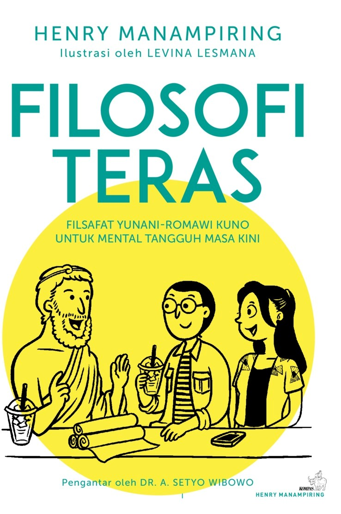
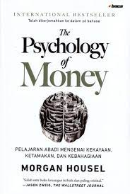
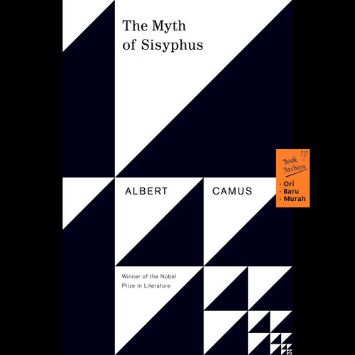

Rekomendasi Buku Bacaan
Daftar buku bacaan yang harus dibaca tahun 2022
1.Filosofi Teras

Filosofi Teras adalah sebuah buku pengantar filsafat Stoa yang dibuat khusus sebagai panduan moral anak muda. Buku ini ditulis untuk menjawab permasalahan tentang tingkat kekhawatiran yang cukup tinggi dalam skala nasional, terutama yang dialami oleh anak muda. Wikipedia
- Terbitan Pertama: 26 November 2018
- Pengarang: Henry Manampiring
- Bahasa: Bahasa Indonesia
- Halaman: 346
2.Sebuah Seni Untuk Bersikap Bodo Amat

Sebuah Seni untuk Bersikap Bodo Amat adalah buku pertama karya Mark Manson, seorang narablog kenamaan dengan lebih dari 2 juta pembaca. Ia tinggal di kota New York. Wikipedia
- Terbitan Pertama: 13 September 2016
- Pengarang: Mark Manson
- Genre: Buku bantuan diri
- Bahasa asli: Inggris
- Bahasa: Indonesia
- Halaman: 246
3.Psychology Of Money

Melakukan dengan baik dengan uang tidak selalu tentang apa yang Anda ketahui. Ini tentang bagaimana Anda berperilaku. Dan perilaku sulit untuk diajarkan, bahkan untuk orang yang benar-benar pintar. Uang—investasi, keuangan pribadi, dan keputusan bisnis—biasanya diajarkan sebagai bidang berbasis matematika, di mana data dan formula memberi tahu kita dengan tepat apa yang harus dilakukan.
- Awalnya diterbitkan : 8 September 2020
- Pengarang : Morgan Housel
- Editor : Morgan Housel
4.Atomic Habits

James Clear, seorang ahli pembentukan kebiasaan, mengungkapkan strategi praktis yang akan mengajari Anda cara membentuk kebiasaan baik, menghilangkan kebiasaan buruk, dan menguasai perilaku kecil yang menghasilkan hasil luar biasa.
- Awalnya diterbitkan : 16 Oktober 2018
- Pengarang : James Clear
- Genre : Buku bantuan mandiri
- Bahasa asli : Inggris
5.Novel Filsafat
A.Novel Dunia Sophie

Dunia Sophie adalah sebuah novel karya Jostein Gaarder, diterbitkan di Indonesia oleh Penerbit Mizan tahun 1996. Aslinya ditulis dalam bahasa Norwegia, tetapi sudah diterjemahkan kedalam limapuluhtiga bahasa, termasuk bahasa Indonesia.
- Terbitan Pertama: 5 Desember 1991
- Pengarang: Jostein Gaarder
- Genre: Novel, Fiksi filosofis
- Bahasa asli: Norwegia
- Karakter: Sophie Amundsen, Albert Knag, Mother, Hilde Møller Knag, Alberto Knox
B.The Myth of Sisyphus

The Myth of Sisyphus adalah esai filosofis tahun 1942 oleh Albert Camus. Dipengaruhi oleh para filsuf seperti Søren Kierkegaard, Arthur Schopenhauer, dan Friedrich Nietzsche, Camus memperkenalkan filosofi absurdnya
- Asli diterbitkan : Oktober 1942
- Pengarang : Albert Camus
- Genre : Filsafat, Esai
- Bahasa asli : Perancis
- Judul asli : Le mythe de Sisyphe
- Penerjemah : Justin O'Brien
C.The Secret History
Novel pertama karya penulis Amerika Donna Tartt, diterbitkan oleh Alfred A. Knopf pada September 1992. Wikipedia
- Asli diterbitkan : September 1992
- Pengarang : Donna Tartt
- Karakter : Richard Papen , Edmund Corcoran , Camilla Macaulay , Charles Macaulay , Julian Morrow
- Genre : Novel, Fiksi Psikologi
- Bahasa asli : Inggris
- Artis sampul : Chip Kidd; Barbara de Wilde